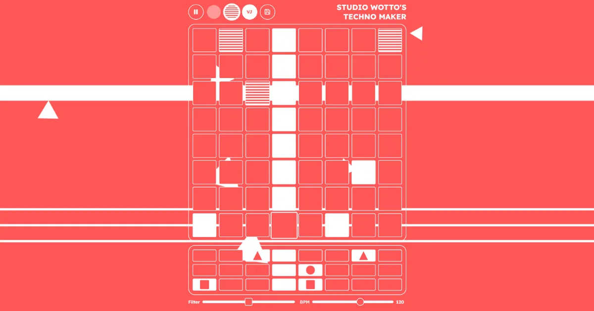

Techno Maker
Wil je weten hoe het voelt om te jammen op een instrument, zonder dat je ooit een instrument hebt aangeraakt?

Afgelopen tijd heb ik technomaker.org geüpdatet. Een webapp met een step sequencer waar je je eigen kleine elektronische beat maakt. Niet om muziek te produceren, maar om live te spelen. Knoppen indrukken, kijken wat er gebeurt, lekker in het moment zitten. Nieuw: je kunt nu je zelfgemaakte stukjes met elkaar delen.
Die ervaring van even helemaal opgaan in muziek maken, dat gun ik iedereen. Creatief zijn, iets maken zonder doel, dat is het mooiste dat er is.
Hoe het ontstond? Jarenlang gaf ik muziek en creatieve lessen in het speciaal onderwijs. Daar leerde ik: het gaat niet om de duurste instrumenten met eindeloze features en ellenlange uitleg. Je wilt iets waar je op alle knopjes mag rammen en al doende ontdekt hoe het werkt. De verdieping komt vanzelf. Samen spelen is het allerbelangrijkste.
Tegenwoordig maak ik interactieve installaties die mensen datzelfde laten ervaren: creatief zijn zonder drempel. En af en toe geef ik nog steeds workshops, om mijn ideeën te blijven testen en in contact te staan met de doelgroepen waar ik het uiteindelijk allemaal voor doe.
Projectinformatie
- Soort
- Eigen project
- Categorie
- Muzikale webapps & games
- Projecttype
- Webapp, step sequencer om live beats te maken
- Studio Wotto verzorgde
- Concept, ontwerp en ontwikkeling
- Platform
- Gratis webapp, technomaker.org
- Toepassing
- Muziek maken, workshops en onderwijs
- Gerelateerde diensten
- Muzikale webapps, muziektechnologie, gamification